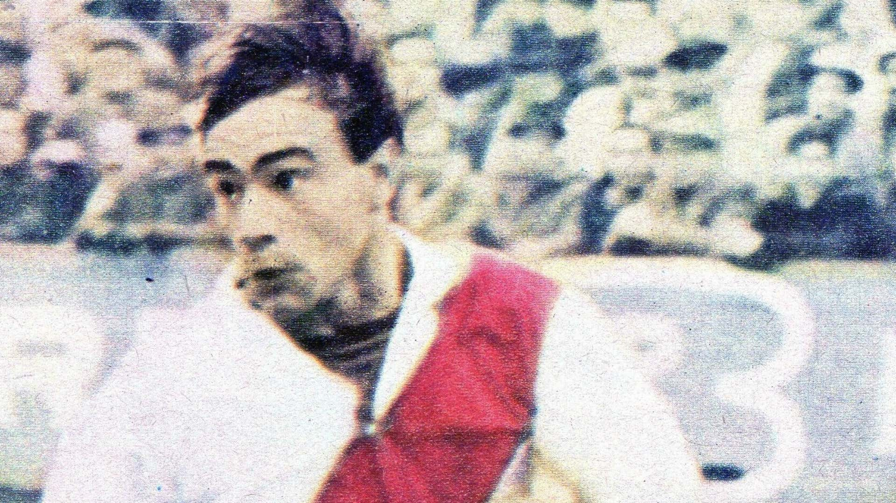
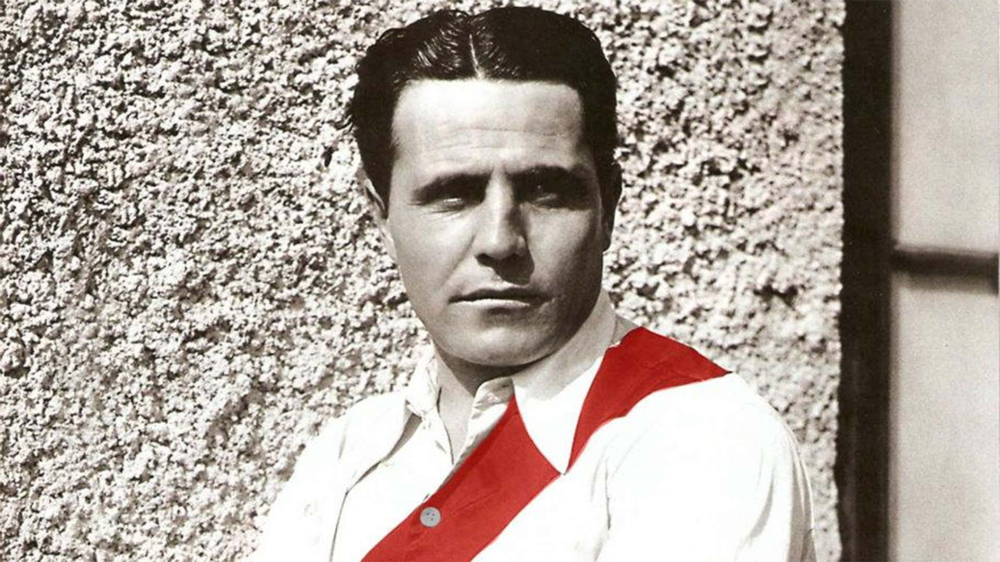
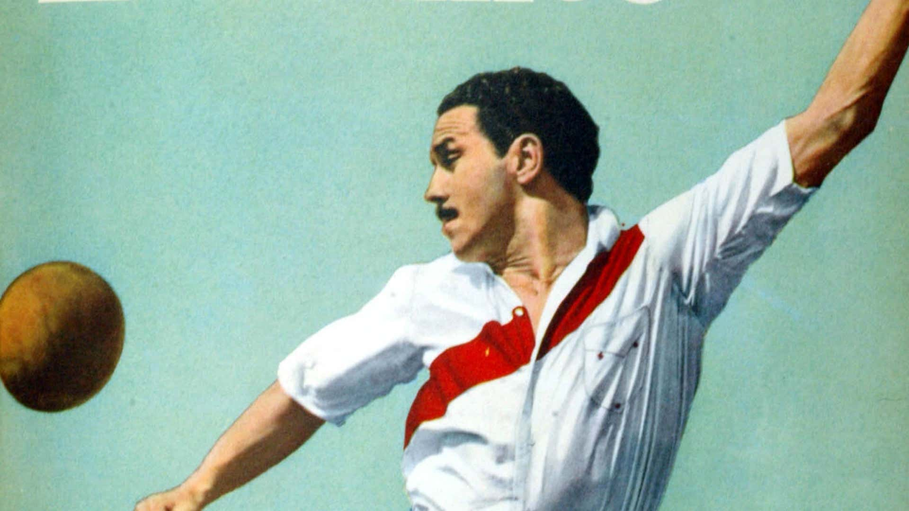
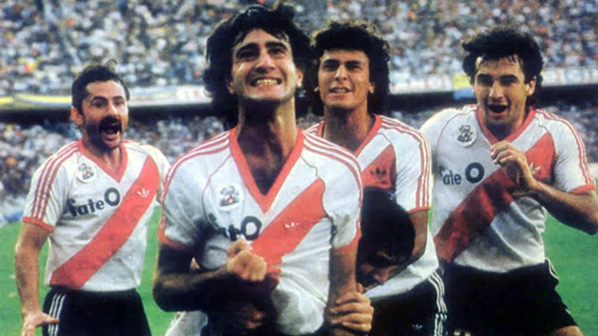
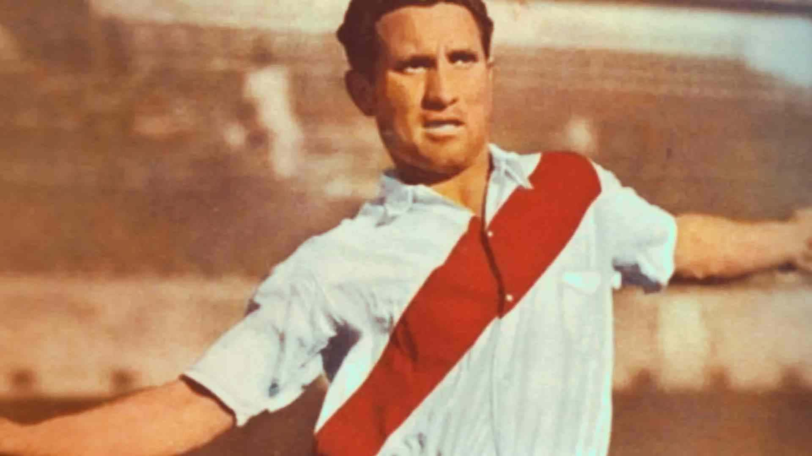
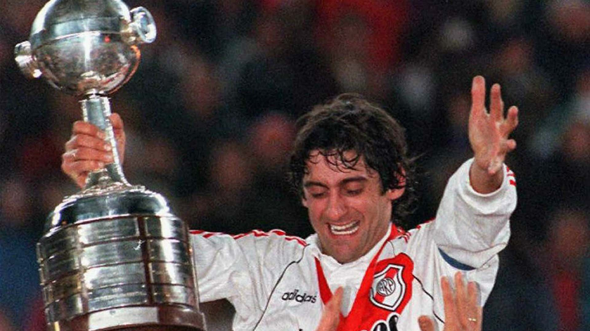
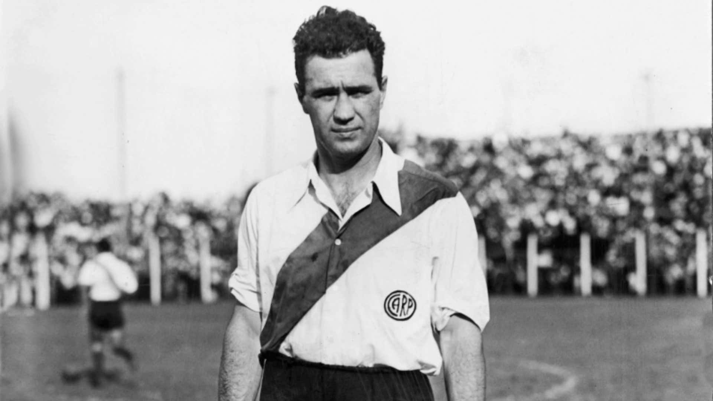
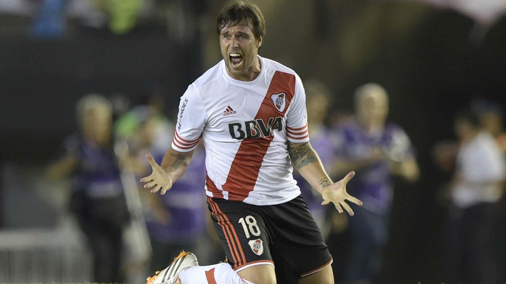

1. Angel Labruna (1939-59) - 317 goles

2. Oscar Más (1964-73, 1975-76) - 217 goles

3. Bernabé Ferreyra (1932-39) - 200 goles

4. Jose Maria Moreno - 184 goles

5. Norberto Alonso - 158 goles

6. Adolfo Pedernera - 143 goles

7. Enzo Francescoli - 137 goles

8. Carlos Peucelle - 118 goles

10. Fernando Cavenaghi - 112 goles
